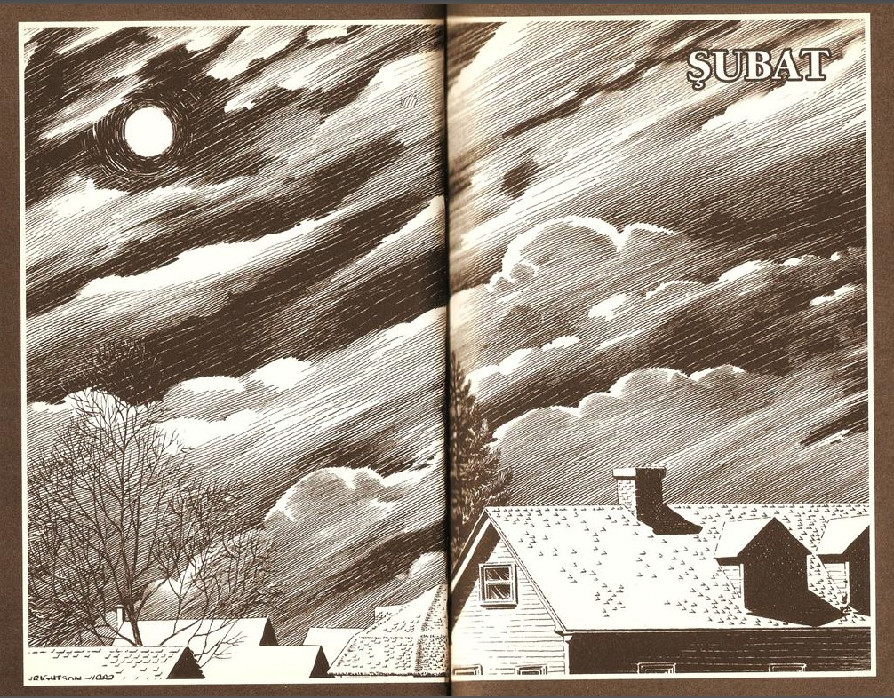
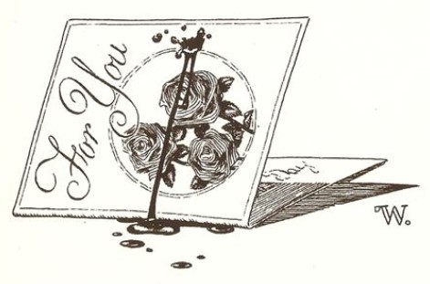

AŞK, DİYE DÜŞÜNÜYOR Stella Randolph, dar bakire yatağında yatarken ve bir Sevgililer Günü dolunayının soğuk, mavi ışığı penceresinden içeri sızıyor.
Ah aşk aşk aşk, aşk şey gibi olsaydı -
Tarker's Mills'deki Otur ve Dik'in sahibi Stella Randolph'a bu yıl yirmi tane Sevgililer Günü kartı gelmişti - biri Paul Newman'dan, biri Robert Redford'dan, biri John Travolta'dan . . . hatta bir tane de Kiss grubundaki Ace Frehley'den. Ayın soğuk, mavi ışığıyla aydınlanmış kartlar, kadının odasının çaprazındaki büroda, açık olarak duruyordu. Her yıl olduğu gibi bu yıl da onların hepsini kendisi göndermişti.
Aşk, şafakta bir öpücük gibi olsaydı ... ya da son öpücük, gerçek bir son öpücük, Harlequin aşk öykülerinin sonundakiler gibi... aşk alacakaranlıkta güller gibi olsaydı...
Tarker's Mills'de herkes ona gülerdi, evet, elbette, ne sanıyordunuz ki! Küçük erkek çocukları onunla dalga geçer, ağızlarını elleriyle kapayarak sinsice sırıtırlardı (ve bazen, caddenin karşı tarafında güven içindeyseler ve polis memuru Neary etrafta değilse, tatlı, alaycı ve soprano sesleriyle "Şişko-Şişko-Patates" şarkısını söylerlerdi) ama kadın sadece aşkla ilgileniyordu ve ayla. İşleri hiç iyi gitmiyor ve kilo alıyordu, ama şu an, buğulanmış pencerelerden içeriye ayın, acı verici mavi bir sel gibi aktığı bu rüyalar gecesinde, aşk kadına hâlâ bir olasılık gibi görünüyordu, adamının gelişiyle birlikte aşk ve yaz kokusu ...
Aşk, biradanım yanağının hoyrat hissi olsaydı, o sürtünüş ve o tırmalama -
Ve aniden pencerede bir tırmalama ...
Stella dirseklerinin üzerinde doğruldu, yatak örtüsü geniş göğsünün üzerinden kayıp düştü. Ay ışığı karanlık bir şey tarafından engelleniyordu - şekilsiz ama açıkça erkeksiydi ve kadın düşünüyordu: Rüya görüyorum . . . ve rüyalarımda onun gelmesine izin vereceğim . . . rüyalarımda gelmeme izin vereceğim. Onlar sözcüğü kirli anlamıyla kullanıyorlar, ama sözcük temiz, sözcük doğru; aşk, gelmek gibi olsaydı.
Ayağa kalkıyor, bunun bir rüya olduğuna inanmıştı, çünkü orada, dışarıda, çömelmiş bir adam vardı, tanıdığı bir adam, neredeyse her gün sokakta yanından geçip gittiği bir adam. O-
(aşk aşk geliyor, aşk geldi)
Ama kadının kısa, tombul parmakları pencerenin soğuk pervazına dokunduğunda onun aslında bir adam olmadığını görecekti; dışarıdaki bir hayvandı, koskocaman, tüyleri karmakarışık bir kurt, pençeleri pencerenin pervazında, arka ayaklarıysa sağrısına değin kasabanın eteklerindeki evin batı duvarının önüne yığılmış kara gömülü.
Ama bugün Sevgililer Günü ve aşk olacak, diye düşündü kadın; gözleri onu rüyasında bile aldatıyordu. O bir adamdı, o adamdı ve o kadar günahkârca yakışıklıydı ki.
(günahkârlık evet aşk günahkârlık gibi olsaydı)
Ve adam ayla donanmış bu gecede gelmişti ve kadını alacaktı. O-
Stella pencereyi kaldırdı, incecik ve neredeyse şeffaf mavi geceliğini dalgalandıran soğuk hava, kadına bunun bir rüya olmadığını söylüyordu. Adam yoktu ve kadın baygınlığa benzer bir hisle adamın aslında orada hiç olmadığını fark etti. Korkuyla ürpererek bir adım geriledi ve kurt kolaylıkla odanın içine atlayıp silkelendi, karanlığın içinde rüya benzeri kar tanecikleri pudra şekeri gibi etrafa saçıldı.
Ama aşk! Aşk ... şey gibiydi... bir çığlık gibi-Bir ay önce kasabanın batısındaki derme çatma demiryolu kulübesinde parçalanmış olarak bulunan Arnie Westrum'u hatırladığında artık çok geçti. Çok geç ...
Kurt, san gözleri soğuk bir şehvetle parlayarak sessizce kadına doğru ilerliyor. Stella Randolph, tombul dizleri, dar bakire yatağının kenarına çarpıncaya kadar yavaşça geriliyor ve yatağın üzerine yığılıyor.
Ay ışığı, canavarın karmakarışık kürkünü gümüş bir çizgiyle ayırıyor.
Bürodaki Sevgililer Günü kartları açık kalmış pencereden içeriye giren rüzgârla hafif hafif titriyor; içlerinden biri tembelce salınıp havayı büyük sessiz kavislere ayırarak aşağıya düşüyor.
Kurt pençelerini yatağa, kadının iki yanına koyuyor ve kadın nefesinin kokusunu duyabiliyor ... sıcak, ama bir şekilde rahatsız edici. Sarı gözleriyle kadına bakıyor.
"Aşkım," diye fısıldıyor kadın ve gözlerini kapıyor.
Kadının üzerine eğiliyor.
Aşk ölmek gibidir.
